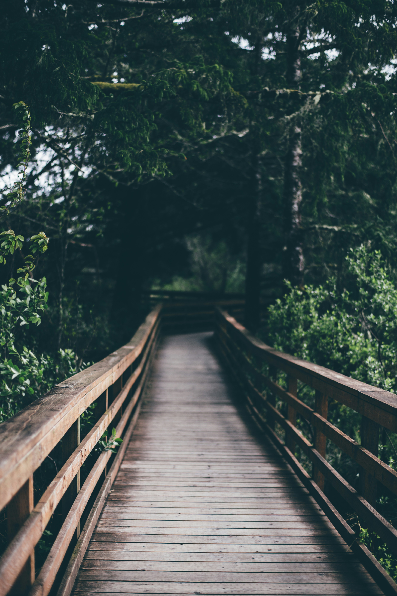
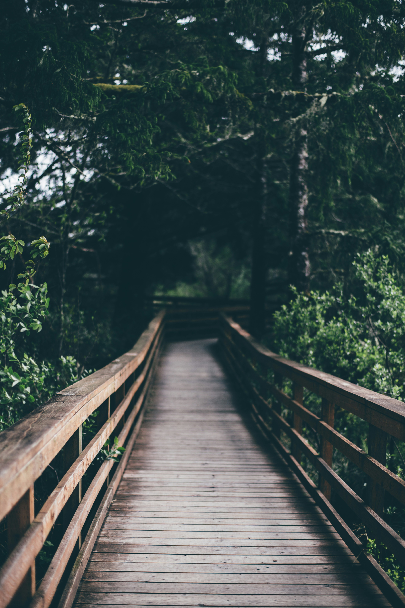

Portland, Oregon

Portland, Oregon is a gorgeous city. My dad was born there and I have gotten to see a glipse of the city but never adventured into it. I think it would be fun to take my dad and go explore. I also know they have a large craft community. I personally knit and crochet and it would be awesome to viist the yarn stores and see the difference between Nebraska craft stores and Oregon craft stores.
Ghost Towns

There are multiple abandon towns in Oregon. Some of which have be turned into tourist stops. A big reason I'm intersted in visiting some of these abandoned towns are to see what someone the old buildings look like. I think it's so intersting to see how things were made before we had the technology we do today. Also I do not know if this town is considered a "ghost town" but I'd love to go visit Boring, Orgeon. Boring, Oregon is the town that Gravity Falls is stated to be based on. The shows is one of my favorites and I'm interested in seeing how the show is based off the town.
Crater Lake National Park

While conducting research on this topic I came across Crater Lake. I had never heard of this lake before but from pictures it looks so breathtaking. I'd love to go kayaking there and take in the scenery. It would be so relaxing to sit on the lake and work on a project just enjoying the nautre around me. And maybe I would be able to see a bear while I'm there.
 
